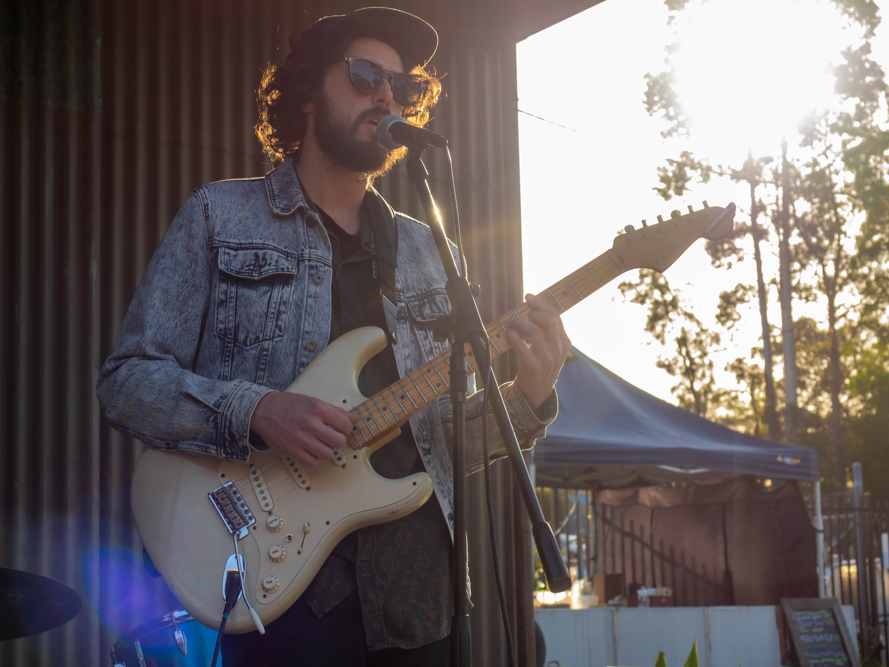

Will Chittick is a solo singer songwriter from Port Kembla, Australia Previously known for fronting surf-psyche band the Chitticks, in 2014 he began developing solo material, honing his skills busking on the streets of the NSW South Coast.
Drawing on his affection for artists such as Billy Bragg, the Dirty Three, Stella Donelly and Kirin J Callinan, his songs are characterised by loop-pedal layered harmonic arrangements that are rooted in folk oriented singer/songwriter traditions, with emphasis on natural guitar tones and lyrics with deeply personal yet often playful narratives.
His song Hollow Day (released by Le Boogie Records), has been played over 9000+ times on Soundcloud and he has supported the likes of Steve Smyth, Jepp and Depp and Ben Wright Smith as well as regularly performing at the Port Kembla Street Festival.
